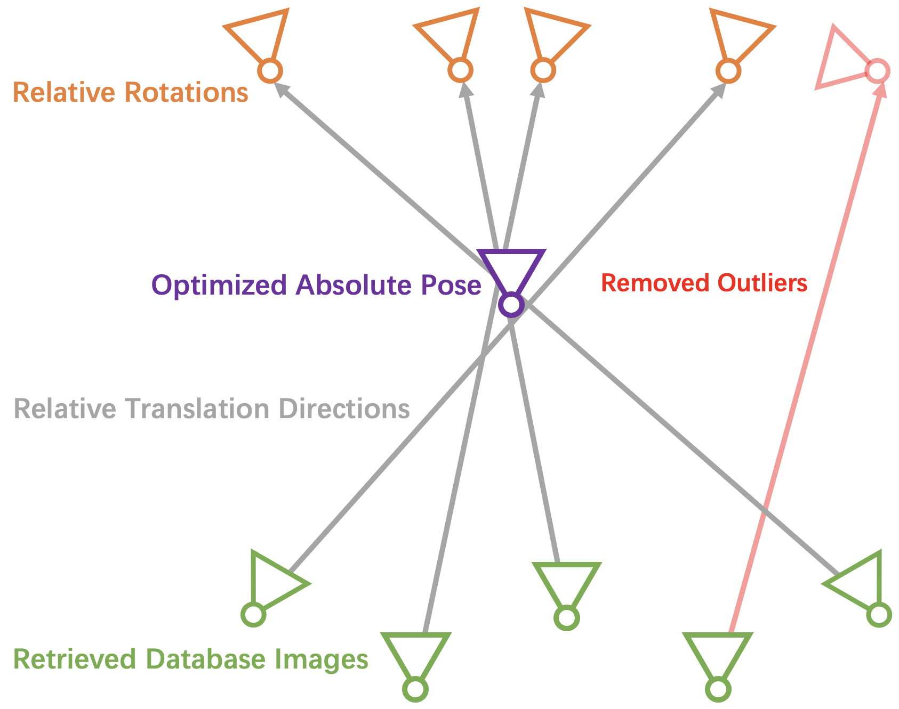

I am a postdoctoral research fellow at the HKU Musketeers Foundation Institute of Data Science, working with Prof. Yanchao Yang, Prof. Difan Zou, and Prof. Yi Ma. My research interests span across the interdisciplinary fields of computer vision, graphics, and robotics. Specifically, I focus on 3D reconstruction and generation from images to support the development of 3D foundation models and embodied AI.
I received my PhD in computer science at Interdisciplinary Research Center (IRC), Shandong University, supervised by Prof. Baoquan Chen. During my PhD, I was a visiting researcher in the Computer Vision and Geometry Group (CVG), ETH Zurich, advised by Prof. Marc Pollefeys. I spent most of my research time in the Visual Computing and Learning Lab (VCL), Peking University, where I also remotely collaborated with Prof. Leonidas J. Guibas and Prof. Thomas Funkhouser. Before that, I was a research intern in the Advanced Innovation Center for Future Visual Entertainment (AICFVE), in Beijing Film Academy, in collaboration with Prof. Kai Xu.
Email: siyandong.3 [at] gmail.com
Google Scholar
/
Github

Lazy Visual Localization via Motion Averaging
Siyan Dong*,
Shaohui Liu* Hengkai Guo, Baoquan Chen, Marc Pollefeys
Technical Report

Visual Localization via Few-Shot Scene Region Classification
Siyan Dong*, Shuzhe Wang*, Yixin Zhuang, Juho Kannala, Marc Pollefeys, Baoquan Chen
International Conference on 3D Vision (3DV) 2022
Paper
/
Code
/
Video

Towards Accurate Active Camera Localization
Qihang Fang*, Yingda Yin*, Qingnan Fan, Fei Xia, Siyan Dong, Sheng Wang, Jue Wang, Leonidas Guibas, Baoquan Chen
European Conference on Computer Vision (ECCV) 2022
Paper
/
Code
/
Video

Multi-Robot Active Mapping via Neural Bipartite Graph Matching
Kai Ye*, Siyan Dong*, Qingnan Fan, He Wang, Li Yi, Fei Xia, Jue Wang, Baoquan Chen
IEEE/CVF International Conference on Computer Vision and Pattern Recognition (CVPR) 2022
Paper
/
Code
/
Video

Robust Neural Routing Through Space Partitions for Camera Relocalization in Dynamic Indoor Environments
Siyan Dong*, Qingnan Fan*, He Wang, Ji Shi, Li Yi, Thomas Funkhouser, Baoquan Chen, Leonidas Guibas
IEEE/CVF International Conference on Computer Vision and Pattern Recognition (CVPR) 2021 (Oral)
Paper
/
Code
/
Video
/
Poster
Multi-Robot Collaborative Dense Scene Reconstruction
Siyan Dong, Kai Xu, Qiang Zhou, Andrea Tagliasacchi, Shiqing Xin, Matthias Nießner, Baoquan Chen
ACM Transactions on Graphics (SIGGRAPH) 2019
Paper
/
Code